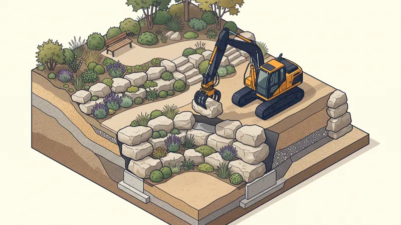

Enrochement Paysager : Types, Prix & Mise en Œuvre en 2026
L'enrochement paysager est une technique d'aménagement extérieur qui utilise de gros blocs de pierre naturelle pour retenir les terres, structurer un jardin en pente ou créer des espaces décoratifs. Très populaire en Provence, l'enrochement s'intègre parfaitement dans le paysage méditerranéen. Découvrez les types d'enrochement, les prix par tonne et les conseils de mise en oeuvre de STP Terrassement.

Enrochement décoratif vs enrochement structurel
L'enrochement décoratif (paysager)
L'enrochement décoratif utilise des blocs de pierre de 100 à 500 kg disposés de manière esthétique pour créer des bordures, des murets, des rocailles ou des massifs. Il n'a pas de fonction structurelle de soutènement mais peut retenir de petits talus (hauteur inférieure à 80 cm). Les pierres sont souvent combinées avec des plantations méditerranéennes (lavande, romarin, thym, oliviers).
L'enrochement structurel (soutènement)
L'enrochement structurel utilise des blocs massifs de 500 kg à 5 tonnes empilés pour créer un véritable mur de soutènement naturel. Il retient les terres sur les terrains en pente et peut atteindre 3 à 5 mètres de hauteur. Chaque bloc est positionné avec précision à la pelle mécanique, imbriqué avec les blocs voisins pour assurer la stabilité.
| Critère | Enrochement décoratif | Enrochement structurel |
|---|---|---|
| Poids des blocs | 100 - 500 kg | 500 kg - 5 tonnes |
| Hauteur maximale | 0,50 - 1,00 m | 1,50 - 5,00 m |
| Fonction principale | Esthétique, aménagement | Soutènement, stabilisation |
| Engin nécessaire | Mini-pelle 3-5 T | Pelle mécanique 14-25 T |
| Étude technique | Non obligatoire | Étude géotechnique recommandée |
| Prix moyen | 80 - 150 €/ml | 150 - 350 €/ml |

Prix de l'enrochement paysager en 2026
Prix des roches par tonne
| Type de roche | Prix par tonne (HT) | Aspect |
|---|---|---|
| Calcaire local (Provence) | 30 - 60 €/T | Blanc-gris, naturel |
| Pierre de Cassis | 50 - 90 €/T | Blanc lumineux |
| Grès (ocre, beige) | 45 - 80 €/T | Tons chauds, provençal |
| Granite gris | 60 - 110 €/T | Gris, très résistant |
| Basalte noir | 70 - 130 €/T | Noir, contemporain |
| Pierre reconstituée | 40 - 70 €/T | Variable, calibrée |
Prix de la pose
| Prestation | Prix moyen (HT) |
|---|---|
| Terrassement préparatoire | 15 - 30 €/ml |
| Transport et livraison des blocs | 10 - 25 €/T |
| Pose enrochement décoratif | 40 - 80 €/ml |
| Pose enrochement structurel | 80 - 180 €/ml |
| Drainage arrière (géotextile + gravier) | 20 - 40 €/ml |
| Végétalisation (plantes méditerranéennes) | 15 - 35 €/ml |
Budget global par projet
| Type de projet | Longueur | Budget total (HT) |
|---|---|---|
| Bordure décorative jardin | 10 - 20 ml | 1 000 - 3 000 € |
| Muret paysager (rocaille) | 10 - 30 ml | 1 500 - 5 000 € |
| Soutènement terrain en pente (h=1.5m) | 10 - 20 ml | 3 000 - 7 000 € |
| Soutènement complet (h=3m) | 15 - 30 ml | 6 000 - 15 000 € |
| Aménagement complet (terrasses étagées) | 30 - 50 ml | 8 000 - 25 000 € |
Les étapes de réalisation d'un enrochement
- Étude du terrain : analyse de la pente, de la nature du sol et du volume de terre à retenir. Pour les enrochements structurels de plus de 2 m, une étude géotechnique est recommandée
- Terrassement préparatoire : excavation de l'assise de l'enrochement. Les premiers blocs doivent être enterrés d'au moins un tiers de leur hauteur pour assurer la stabilité
- Fondation drainante : mise en place d'une couche de grave 0/80 compactée en fond de fouille (30-50 cm)
- Pose des blocs : les blocs sont positionnés un par un à la pelle mécanique, en commençant par la base. Chaque rang est légèrement incliné vers le talus (fruit de 10 à 15 %)
- Drainage arrière : pose d'un géotextile et de gravier drainant (20-30 cm) derrière l'enrochement pour évacuer les eaux d'infiltration
- Remblaiement : comblement progressif entre l'enrochement et le terrain naturel avec des matériaux drainants
- Végétalisation : plantation dans les interstices entre les blocs et au pied de l'enrochement
Enrochement pierre : quel type de roche choisir ?
Le choix de la roche conditionne à la fois la tenue mécanique de l'ouvrage, son esthétique et son prix. Quatre critères guident la sélection :
- La densité : plus la roche est dense (granit ≈ 2,7 t/m³, calcaire dur ≈ 2,4 t/m³), plus le mur est stable à volume égal. Les roches tendres ou gélives sont à proscrire en soutènement.
- La blocométrie : blocs de 300 à 800 kg pour un enrochement paysager, 800 kg à 3 t pour un soutènement. Des blocs trop petits pour la hauteur à retenir sont la première cause de désordre.
- La résistance au gel et à l'eau : indispensable pour les enrochements de berge ou exposés au ruissellement ; le granit et les calcaires durs s'imposent, les calcaires tendres se délitent.
- La provenance : le transport pèse jusqu'à 30 % du prix — une carrière locale réduit la facture et l'empreinte carbone.
| Type de roche | Prix à la tonne (livrée) | Usage recommandé |
|---|---|---|
| Calcaire de Provence | 35 - 60 €/t | Paysager et soutènement courant |
| Calcaire dur / pierre à bâtir | 50 - 80 €/t | Soutènement, berges |
| Granite | 70 - 120 €/t | Soutènement fort, zones humides |
| Grès ocre | 60 - 100 €/t | Décoratif, rocailles |
| Pierre de Cassis | 90 - 150 €/t | Décoratif haut de gamme |
Les roches locales à privilégier en PACA
En Provence-Alpes-Côte d'Azur, le choix des roches locales est privilégié pour des raisons esthétiques, économiques et écologiques :
- Calcaire de Provence : pierre blanche à gris clair, omniprésente dans le paysage provençal. Très bon rapport qualité-prix, elle s'intègre naturellement dans l'environnement. Carrières à proximité d'Aix-en-Provence (Rognes, Fontvieille)
- Pierre de Cassis : calcaire blanc très lumineux, prisé pour les enrochements décoratifs haut de gamme. Plus onéreuse mais d'un blanc éclatant typique des calanques
- Grès ocre du Luberon : tons chauds (ocre, rouille, beige) qui rappellent les villages perchés du Luberon. Idéal pour les jardins de style provençal
- Granite des Maures : provenant du massif des Maures dans le Var, ce granite offre une résistance mécanique exceptionnelle pour les enrochements structurels
Enrochement vs autres solutions de soutènement
| Solution | Prix moyen (€/m²) | Avantages | Inconvénients |
|---|---|---|---|
| Enrochement | 100 - 250 €/m² | Naturel, durable, drainant | Emprise au sol importante |
| Mur béton banché | 200 - 400 €/m² | Faible emprise, grande hauteur | Coûteux, drainage à prévoir |
| Gabions | 120 - 280 €/m² | Modulaire, perméable | Aspect industriel |
| Mur en pierre sèche | 150 - 350 €/m² | Très esthétique, écologique | Main-d'oeuvre spécialisée |
Votre Projet d'Enrochement en PACA
STP Terrassement réalise vos enrochements paysagers et structurels à Aix-en-Provence et dans toute la région PACA. Devis gratuit sous 24h.
Demandez votre devis gratuitRéglementation et autorisations
- Hauteur inférieure à 2 m : aucune autorisation nécessaire dans la plupart des communes
- Hauteur supérieure à 2 m : déclaration préalable de travaux obligatoire
- Zone ABF (périmètre de monument historique) : avis de l'Architecte des Bâtiments de France requis
- Zone Natura 2000 ou espace naturel sensible : étude d'impact environnemental possible
- Proximité d'un cours d'eau : autorisation au titre de la loi sur l'eau (IOTA) si l'enrochement est situé à moins de 10 m d'un cours d'eau
Conseils d'entretien
L'enrochement paysager nécessite peu d'entretien, ce qui en fait une solution durable :
- Désherbage annuel : éliminez les adventices qui poussent dans les interstices (sauf si végétalisation souhaitée)
- Vérification du drainage : contrôlez que les exutoires de drainage ne sont pas obstrués, surtout après les épisodes pluvieux méditerranéens
- Inspection visuelle : vérifiez l'absence de mouvement ou de basculement de blocs, notamment après un épisode de gel
- Nettoyage haute pression (optionnel) : pour enlever les mousses et lichens sur les pierres calcaires
FAQ : Enrochement paysager
Combien coûte un enrochement paysager au mètre linéaire ?
Un enrochement paysager coûte entre 80 et 250 euros par mètre linéaire en 2026, fourniture et pose comprises. Le prix varie selon le type de roche et la hauteur de l'enrochement.
Quelle est la différence entre enrochement décoratif et structurel ?
L'enrochement décoratif utilise des blocs de 100 à 500 kg pour l'esthétique. L'enrochement structurel utilise des blocs de 500 kg à 5 tonnes pour retenir les terres sur les terrains en pente.
Faut-il un permis pour un enrochement ?
Non pour un enrochement de moins de 2 m de hauteur. Au-delà, une déclaration préalable est requise. En zone protégée (ABF, Natura 2000), des autorisations supplémentaires peuvent être nécessaires.
Quelles roches choisir en Provence ?
Le calcaire local (pierre de Provence) offre le meilleur rapport qualité-prix et s'intègre naturellement dans le paysage. Le grès ocre du Luberon est idéal pour un style provençal authentique.